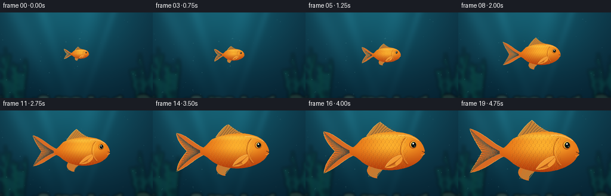
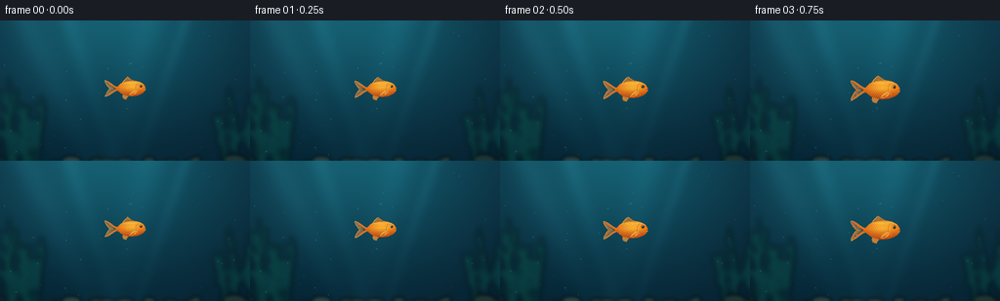

CODING AGENTS AS PIXEL WORLD MODELS
traex/GPT-6.1-Sol · instance_preservation_0050
点击播放 · 原生 RGB 像素
逐轮保存的候选
回放视频、检查图与代码变化。
每份候选均可单独播放。实际图片检查记录在下方工具轨迹中。
候选 01播放与检查图
点击播放 · 原生 RGB 像素


展开代码变化
--- 上一保存版本
+++ 本次保存版本
@@ -0,0 +1,181 @@
+from pathlib import Path
+import math
+import numpy as np
+from PIL import Image, ImageDraw, ImageFilter
+import artifact_io
+
+ROOT = Path(__file__).resolve().parent
+W, H, SS = 256, 144, 3
+SW, SH = W*SS, H*SS
+rng = np.random.default_rng(21)
+
+def bezier(points, n=35):
+ p=np.asarray(points,float)
+ t=np.linspace(0,1,n)[:,None]
+ return ((1-t)**3*p[0]+3*(1-t)**2*t*p[1]+3*(1-t)*t*t*p[2]+t**3*p[3]).tolist()
+
+def path(segs):
+ out=[]
+ for seg in segs: out.extend(bezier(seg))
+ return out
+
+# A stationary underwater environment: a dark teal depth gradient and filtered sunlight.
+y,x=np.mgrid[0:SH,0:SW].astype(float); x/=SS; y/=SS
+light=np.exp(-((x-113)/128)**2-((y+10)/115)**2)
+base=np.empty((SH,SW,3),float)
+base[:,:,0]=5+13*light+4*(1-y/H)
+base[:,:,1]=31+56*light+9*(1-y/H)
+base[:,:,2]=46+59*light+10*(1-y/H)
+for center,angle,width in [(25,.48,15),(71,.32,10),(152,-.23,18),(190,-.34,7)]:
+ ray=np.exp(-((x-(center+angle*y))/width)**2)*np.exp(-y/125)
+ base += ray[:,:,None]*np.array([5,12,13])
+base += np.sin(x*.028+y*.019)[:,:,None]*1.2
+background=Image.fromarray(np.uint8(np.clip(base,0,255))).convert('RGBA')
+# Distant foliage is kept out of the central silhouette.
+fol=Image.new('RGBA',(SW,SH)); d=ImageDraw.Draw(fol)
+for side in [0,1]:
+ for j in range(13):
+ xb=(rng.uniform(-9,42) if side==0 else rng.uniform(228,273))
+ ytop=rng.uniform(58,118); length=151-ytop
+ pts=[]
+ for q in np.linspace(0,1,28):
+ pts.append(((xb+math.sin(q*4+j)*6*q)*SS,(151-q*length)*SS))
+ d.line(pts,fill=(9,61+int(rng.integers(0,19)),65,170),width=int(rng.uniform(2,6)*SS))
+ for q in [.3,.5,.7]:
+ yy=151-q*length; xx=xb+math.sin(q*4+j)*6*q
+ leaf=[(xx*SS,yy*SS),((xx-7)*SS,(yy-8)*SS),((xx-9)*SS,(yy-16)*SS),((xx-2)*SS,(yy-11)*SS)]
+ d.polygon(leaf,fill=(10,78,72,120))
+background=Image.alpha_composite(background,fol.filter(ImageFilter.GaussianBlur(2.7*SS)))
+# Gentle fixed bottom rocks and a blurred suggestion of sand, anchoring scale.
+floor=Image.new('RGBA',(SW,SH)); d=ImageDraw.Draw(floor)
+for j in range(38):
+ xx=rng.uniform(-5,260); yy=rng.uniform(141,157); rr=rng.uniform(3,12)
+ c=int(rng.uniform(28,52))
+ d.ellipse(((xx-rr)*SS,(yy-rr*.35)*SS,(xx+rr)*SS,(yy+rr*.5)*SS), fill=(c,c+24,c+20,210))
+background=Image.alpha_composite(background,floor.filter(ImageFilter.GaussianBlur(1.9*SS)))
+particles=[(rng.uniform(0,W),rng.uniform(0,H),rng.uniform(.22,.7),rng.uniform(.3,1.0)) for _ in range(39)]
+
+bodypath=path([
+ [(67,0),(65,-9),(61,-17),(52,-23)],
+ [(52,-23),(28,-39),(-13,-34),(-39,-22)],
+ [(-39,-22),(-46,-16),(-51,-7),(-59,-5)],
+ [(-59,-5),(-62,-3),(-62,4),(-57,7)],
+ [(-57,7),(-45,10),(-42,21),(-23,27)],
+ [(-23,27),(8,38),(40,30),(55,18)],
+ [(55,18),(62,13),(63,7),(67,4)],
+ [(67,4),(65,3),(64,2),(67,0)]
+])
+
+def render(i):
+ t=i/19
+ # The camera and environment stay fixed; only the same fish increases in size.
+ grow=t*t*(3-2*t)
+ scale=.24+.80*grow
+ cx=133+2*math.sin(t*math.pi)
+ cy=70+1.6*math.sin(t*2*math.pi)
+ phase=i*.53
+ wag=math.sin(phase)
+ im=background.copy()
+ dust=Image.new('RGBA',im.size); dd=ImageDraw.Draw(dust)
+ for px,py,r,v in particles:
+ yy=(py-t*4*v)%H; xx=px+math.sin(t*1.5+py)*.5
+ dd.ellipse(((xx-r)*SS,(yy-r)*SS,(xx+r)*SS,(yy+r)*SS), fill=(130,203,197,int(24+21*v)))
+ im=Image.alpha_composite(im,dust)
+ def tr(p): return ((cx+p[0]*scale)*SS,(cy+p[1]*scale)*SS)
+ def poly(points,fill,layer=None):
+ dest=layer if layer is not None else im
+ ImageDraw.Draw(dest).polygon([tr(p) for p in points],fill=fill)
+ def line(points,fill,width=1,layer=None):
+ dest=layer if layer is not None else im
+ ImageDraw.Draw(dest).line([tr(p) for p in points],fill=fill,width=max(1,round(width*scale*SS)),joint='curve')
+ # Fins behind the main body, translucent fan with independent gentle flex.
+ fins=Image.new('RGBA',im.size)
+ tail=path([
+ [(-54,-6),(-70,-11),(-87,-32),(-108+wag*3,-36+wag*3)],
+ [(-108+wag*3,-36+wag*3),(-105,-22),(-94,-8),(-88+wag*3,0)],
+ [(-88+wag*3,0),(-96,13),(-104,24),(-107+wag*3,35+wag*3)],
+ [(-107+wag*3,35+wag*3),(-83,29),(-68,12),(-54,7)]
+ ])
+ poly(tail,(236,111,31,232),fins)
+ line(tail+tail[:1],(255,181,70,245),.65,fins)
+ for f in np.linspace(0,1,17):
+ if f<.5:
+ v=f*2; end=(-108+20*v+wag*3,-36+36*v+wag*3*(1-v))
+ else:
+ v=(f-.5)*2; end=(-88-19*v+wag*3,35*v+wag*3*v)
+ pts=bezier([(-55,1),(-71,-3+f*7),(end[0]+10,end[1]*.68),end])
+ line(pts,(154,63,18,115),.7,fins)
+ line([(p[0],p[1]+.6) for p in pts],(255,204,103,130),.38,fins)
+ dorsal=path([
+ [(-32,-26),(-25,-36),(-18,-45),(-9,-51+wag*1.2)],
+ [(-9,-51+wag*1.2),(1,-42),(12,-32),(36,-29)],
+ [(36,-29),(13,-26),(-15,-24),(-32,-26)]
+ ])
+ poly(dorsal,(231,139,43,215),fins)
+ line(dorsal[:70],(255,191,84,230),.7,fins)
+ for k in range(10):
+ a=k/9
+ line(bezier([(-25+57*a,-27),(-22+40*a,-31),(-15+27*a,-37+7*a),(-9+43*a,-50+21*a)]),(163,74,21,145),.65,fins)
+ lower=path([[(-28,25),(-37,36),(-25,46),(-14,46)],[(-14,46),(-16,38),(-5,31),(1,29)]])
+ poly(lower,(232,123,36,230),fins)
+ for a in np.linspace(0,1,7):
+ line([(-22+20*a,27),(-29+15*a,43)],(255,184,70,160),.6,fins)
+ im=Image.alpha_composite(im,fins)
+ # Smoothly shaded body, with an invariant scale pattern.
+ mask=Image.new('L',im.size); ImageDraw.Draw(mask).polygon([tr(p) for p in bodypath],fill=255)
+ X=(x-cx)/scale; Y=(y-cy)/scale
+ glow=np.exp(-((X-9)/49)**2-((Y+11)/24)**2)
+ belly=np.clip((Y+5)/38,0,1)
+ shade=np.clip((X-42)/32,0,1)*.10
+ rim=np.exp(-((Y+26)/5.2)**2)*np.exp(-((X-2)/55)**2)
+ colors=np.empty((SH,SW,3),float)
+ colors[:,:,0]=225+27*glow-47*belly-16*shade+8*rim
+ colors[:,:,1]=102+73*glow-44*belly-10*shade+38*rim
+ colors[:,:,2]=19+26*glow-8*belly+20*rim
+ # Microtexture in local coordinates stays attached to the fish as it grows.
+ texture=(np.sin(X*3.7+np.sin(Y*1.9))+np.sin(Y*4.9+X*.7))*.75
+ colors+=texture[:,:,None]
+ flesh=Image.fromarray(np.uint8(np.clip(colors,0,255))).convert('RGBA'); flesh.putalpha(mask)
+ im=Image.alpha_composite(im,flesh)
+ scales=Image.new('RGBA',im.size)
+ for row,yy in enumerate(np.arange(-27,30,5.4)):
+ for xx in np.arange(-44,36,6.7):
+ xx+=3.35*(row%2)
+ arc=[]
+ for a in np.linspace(-1.05,1.05,13):
+ arc.append((xx+3.7*math.cos(a),yy+3.05*math.sin(a)))
+ line(arc,(133,59,17,77),.55,scales)
+ line([(p[0]-.7,p[1]-.65) for p in arc],(255,214,100,67),.42,scales)
+ alpha=np.asarray(scales.getchannel('A')).astype(np.uint16)*np.asarray(mask).astype(np.uint16)//255
+ scales.putalpha(Image.fromarray(alpha.astype('uint8')))
+ im=Image.alpha_composite(im,scales)
+ details=Image.new('RGBA',im.size)
+ # Gill cover and curved reflective forehead.
+ line(bezier([(34,-23),(22,-12),(23,11),(36,23)]),(156,66,16,200),1.05,details)
+ line(bezier([(36,-22),(26,-10),(26,10),(38,21)]),(255,197,89,170),.7,details)
+ line(bezier([(57,-18),(43,-27),(34,-28),(22,-27)]),(255,220,132,160),1.15,details)
+ # Close pectoral fin is a fan resting over the orange body.
+ fin=path([[(27,7),(15,7),(3,19),(-2+wag*1.3,28)],[(-2+wag*1.3,28),(11,31),(28,23),(29,12)]])
+ poly(fin,(248,164,55,214),details)
+ for a in np.linspace(0,1,9):
+ end=(-1+19*a,28-4*a)
+ line(bezier([(27,9),(21,16),(11,22),end]),(167,87,23,130),.6,details)
+ line(fin[:35],(255,221,120,180),.6,details)
+ def ellipse(xx,yy,rx,ry,color):
+ a=tr((xx-rx,yy-ry)); b=tr((xx+rx,yy+ry))
+ ImageDraw.Draw(details).ellipse((*a,*b),fill=color)
+ # Clear, consistent eye and little pursed lips.
+ ellipse(47,-11,6.4,6.6,(177,77,17,255))
+ ellipse(47.4,-11.4,5.45,5.6,(255,188,61,255))
+ ellipse(48,-11.1,4.1,4.7,(15,23,22,255))
+ ellipse(48.7,-10.7,2.6,3.6,(4,12,15,255))
+ ellipse(47.2,-13.1,1.25,1.3,(248,255,232,250))
+ ellipse(49.5,-9.0,.55,.65,(102,153,139,245))
+ line(bezier([(62,-.2),(65,1.8),(67,1.8),(67,2.1)]),(105,52,25,230),1.1,details)
+ line(bezier([(61,6),(64,7),(66,5),(67,4)]),(255,181,76,210),.8,details)
+ im=Image.alpha_composite(im,details)
+ return np.array(im.convert('RGB').resize((W,H),Image.Resampling.LANCZOS),dtype=np.uint8)
+
+frames=np.stack([render(i) for i in range(20)])
+artifact_io.save(frames,ROOT)
+print('Saved',frames.shape,frames.dtype,'to',ROOT)
可观测工具轨迹
实际执行的命令与返回图片。
命令 1exit 0
/bin/bash -lc "ls -la && cat prompt.txt && printf '\\n---RULES---\\n' && cat GENERATION_RULES.md && printf '\\n---SPEC---\\n' && cat task_spec.json"
命令 2exit 0
/bin/bash -lc "cat artifact_io.py && python - <<'PY'
import PIL,numpy
print('Pillow and numpy available')
PY"命令 3exit 0
/bin/bash -lc "cat > generate.py <<'PY'
from pathlib import Path
import math
import numpy as np
from PIL import Image, ImageDraw, ImageFilter
import artifact_io
ROOT = Path(__file__).resolve().parent
W, H, SS = 256, 144, 3
SW, SH = W*SS, H*SS
rng = np.random.default_rng(21)
def bezier(points, n=35):
p=np.asarray(points,float)
t=np.linspace(0,1,n)[:,None]
return ((1-t)**3*p[0]+3*(1-t)**2*t*p[1]+3*(1-t)*t*t*p[2]+t**3*p[3]).tolist()
def path(segs):
out=[]
for seg in segs: out.extend(bezier(seg))
return out
# A stationary underwater environment: a dark teal depth gradient and filtered sunlight.
y,x=np.mgrid[0:SH,0:SW].astype(float); x/=SS; y/=SS
light=np.exp(-((x-113)/128)**2-((y+10)/115)**2)
base=np.empty((SH,SW,3),float)
base[:,:,0]=5+13*light+4*(1-y/H)
base[:,:,1]=31+56*light+9*(1-y/H)
base[:,:,2]=46+59*light+10*(1-y/H)
for center,angle,width in [(25,.48,15),(71,.32,10),(152,-.23,18),(190,-.34,7)]:
ray=np.exp(-((x-(center+angle*y))/width)**2)*np.exp(-y/125)
base += ray[:,:,None]*np.array([5,12,13])
base += np.sin(x*.028+y*.019)[:,:,None]*1.2
background=Image.fromarray(np.uint8(np.clip(base,0,255))).convert('RGBA')
# Distant foliage is kept out of the central silhouette.
fol=Image.new('RGBA',(SW,SH)); d=ImageDraw.Draw(fol)
for side in [0,1]:
for j in range(13):
xb=(rng.uniform(-9,42) if side==0 else rng.uniform(228,273))
ytop=rng.uniform(58,118); length=151-ytop
pts=[]
for q in np.linspace(0,1,28):
pts.append(((xb+math.sin(q*4+j)*6*q)*SS,(151-q*length)*SS))
d.line(pts,fill=(9,61+int(rng.integers(0,19)),65,170),width=int(rng.uniform(2,6)*SS))
for q in [.3,.5,.7]:
yy=151-q*length; xx=xb+math.sin(q*4+j)*6*q
leaf=[(xx*SS,yy*SS),((xx-7)*SS,(yy-8)*SS),((xx-9)*SS,(yy-16)*SS),((xx-2)*SS,(yy-11)*SS)]
d.polygon(leaf,fill=(10,78,72,120))
background=Image.alpha_composite(background,fol.filter(ImageFilter.GaussianBlur(2.7*SS)))
# Gentle fixed bottom rocks and a blurred suggestion of sand, anchoring scale.
floor=Image.new('RGBA',(SW,SH)); d=ImageDraw.Draw(floor)
for j in range(38):
xx=rng.uniform(-5,260); yy=rng.uniform(141,157); rr=rng.uniform(3,12)
c=int(rng.uniform(28,52))
d.ellipse(((xx-rr)*SS,(yy-rr*.35)*SS,(xx+rr)*SS,(yy+rr*.5)*SS), fill=(c,c+24,c+20,210))
background=Image.alpha_composite(background,floor.filter(ImageFilter.GaussianBlur(1.9*SS)))
particles=[(rng.uniform(0,W),rng.uniform(0,H),rng.uniform(.22,.7),rng.uniform(.3,1.0)) for _ in range(39)]
bodypath=path([
[(67,0),(65,-9),(61,-17),(52,-23)],
[(52,-23),(28,-39),(-13,-34),(-39,-22)],
[(-39,-22),(-46,-16),(-51,-7),(-59,-5)],
[(-59,-5),(-62,-3),(-62,4),(-57,7)],
[(-57,7),(-45,10),(-42,21),(-23,27)],
[(-23,27),(8,38),(40,30),(55,18)],
[(55,18),(62,13),(63,7),(67,4)],
[(67,4),(65,3),(64,2),(67,0)]
])
def render(i):
t=i/19
# The camera and environment stay fixed; only the same fish increases in size.
grow=t*t*(3-2*t)
scale=.24+.80*grow
cx=133+2*math.sin(t*math.pi)
cy=70+1.6*math.sin(t*2*math.pi)
phase=i*.53
wag=math.sin(phase)
im=background.copy()
dust=Image.new('RGBA',im.size); dd=ImageDraw.Draw(dust)
for px,py,r,v in particles:
yy=(py-t*4*v)%H; xx=px+math.sin(t*1.5+py)*.5
dd.ellipse(((xx-r)*SS,(yy-r)*SS,(xx+r)*SS,(yy+r)*SS), fill=(130,203,197,int(24+21*v)))
im=Image.alpha_composite(im,dust)
def tr(p): return ((cx+p[0]*scale)*SS,(cy+p[1]*scale)*SS)
def poly(points,fill,layer=None):
dest=layer if layer is not None else im
ImageDraw.Draw(dest).polygon([tr(p) for p in points],fill=fill)
def line(points,fill,width=1,layer=None):
dest=layer if layer is not None else im
ImageDraw.Draw(dest).line([tr(p) for p in points],fill=fill,width=max(1,round(width*scale*SS)),joint='curve')
# Fins behind the main body, translucent fan with independent gentle flex.
fins=Image.new('RGBA',im.size)
tail=path([
[(-54,-6),(-70,-11),(-87,-32),(-108+wag*3,-36+wag*3)],
[(-108+wag*3,-36+wag*3),(-105,-22),(-94,-8),(-88+wag*3,0)],
[(-88+wag*3,0),(-96,13),(-104,24),(-107+wag*3,35+wag*3)],
[(-107+wag*3,35+wag*3),(-83,29),(-68,12),(-54,7)]
])
poly(tail,(236,111,31,232),fins)
line(tail+tail[:1],(255,181,70,245),.65,fins)
for f in np.linspace(0,1,17):
if f<.5:
v=f*2; end=(-108+20*v+wag*3,-36+36*v+wag*3*(1-v))
else:
v=(f-.5)*2; end=(-88-19*v+wag*3,35*v+wag*3*v)
pts=bezier([(-55,1),(-71,-3+f*7),(end[0]+10,end[1]*.68),end])
line(pts,(154,63,18,115),.7,fins)
line([(p[0],p[1]+.6) for p in pts],(255,204,103,130),.38,fins)
dorsal=path([
[(-32,-26),(-25,-36),(-18,-45),(-9,-51+wag*1.2)],
[(-9,-51+wag*1.2),(1,-42),(12,-32),(36,-29)],
[(36,-29),(13,-26),(-15,-24),(-32,-26)]
])
poly(dorsal,(231,139,43,215),fins)
line(dorsal[:70],(255,191,84,230),.7,fins)
for k in range(10):
a=k/9
line(bezier([(-25+57*a,-27),(-22+40*a,-31),(-15+27*a,-37+7*a),(-9+43*a,-50+21*a)]),(163,74,21,145),.65,fins)
lower=path([[(-28,25),(-37,36),(-25,46),(-14,46)],[(-14,46),(-16,38),(-5,31),(1,29)]])
poly(lower,(232,123,36,230),fins)
for a in np.linspace(0,1,7):
line([(-22+20*a,27),(-29+15*a,43)],(255,184,70,160),.6,fins)
im=Image.alpha_composite(im,fins)
# Smoothly shaded body, with an invariant scale pattern.
mask=Image.new('L',im.size); ImageDraw.Draw(mask).polygon([tr(p) for p in bodypath],fill=255)
X=(x-cx)/scale; Y=(y-cy)/scale
glow=np.exp(-((X-9)/49)**2-((Y+11)/24)**2)
belly=np.clip((Y+5)/38,0,1)
shade=np.clip((X-42)/32,0,1)*.10
rim=np.exp(-((Y+26)/5.2)**2)*np.exp(-((X-2)/55)**2)
colors=np.empty((SH,SW,3),float)
colors[:,:,0]=225+27*glow-47*belly-16*shade+8*rim
colors[:,:,1]=102+73*glow-44*belly-10*shade+38*rim
colors[:,:,2]=19+26*glow-8*belly+20*rim
# Microtexture in local coordinates stays attached to the fish as it grows.
texture=(np.sin(X*3.7+np.sin(Y*1.9))+np.sin(Y*4.9+X*.7))*.75
colors+=texture[:,:,None]
flesh=Image.fromarray(np.uint8(np.clip(colors,0,255))).convert('RGBA'); flesh.putalpha(mask)
im=Image.alpha_composite(im,flesh)
scales=Image.new('RGBA',im.size)
for row,yy in enumerate(np.arange(-27,30,5.4)):
for xx in np.arange(-44,36,6.7):
xx+=3.35*(row%2)
arc=[]
for a in np.linspace(-1.05,1.05,13):
arc.append((xx+3.7*math.cos(a),yy+3.05*math.sin(a)))
line(arc,(133,59,17,77),.55,scales)
line([(p[0]-.7,p[1]-.65) for p in arc],(255,214,100,67),.42,scales)
alpha=np.asarray(scales.getchannel('A')).astype(np.uint16)*np.asarray(mask).astype(np.uint16)//255
scales.putalpha(Image.fromarray(alpha.astype('uint8')))
im=Image.alpha_composite(im,scales)
details=Image.new('RGBA',im.size)
# Gill cover and curved reflective forehead.
line(bezier([(34,-23),(22,-12),(23,11),(36,23)]),(156,66,16,200),1.05,details)
line(bezier([(36,-22),(26,-10),(26,10),(38,21)]),(255,197,89,170),.7,details)
line(bezier([(57,-18),(43,-27),(34,-28),(22,-27)]),(255,220,132,160),1.15,details)
# Close pectoral fin is a fan resting over the orange body.
fin=path([[(27,7),(15,7),(3,19),(-2+wag*1.3,28)],[(-2+wag*1.3,28),(11,31),(28,23),(29,12)]])
poly(fin,(248,164,55,214),details)
for a in np.linspace(0,1,9):
end=(-1+19*a,28-4*a)
line(bezier([(27,9),(21,16),(11,22),end]),(167,87,23,130),.6,details)
line(fin[:35],(255,221,120,180),.6,details)
def ellipse(xx,yy,rx,ry,color):
a=tr((xx-rx,yy-ry)); b=tr((xx+rx,yy+ry))
ImageDraw.Draw(details).ellipse((*a,*b),fill=color)
# Clear, consistent eye and little pursed lips.
ellipse(47,-11,6.4,6.6,(177,77,17,255))
ellipse(47.4,-11.4,5.45,5.6,(255,188,61,255))
ellipse(48,-11.1,4.1,4.7,(15,23,22,255))
ellipse(48.7,-10.7,2.6,3.6,(4,12,15,255))
ellipse(47.2,-13.1,1.25,1.3,(248,255,232,250))
ellipse(49.5,-9.0,.55,.65,(102,153,139,245))
line(bezier([(62,-.2),(65,1.8),(67,1.8),(67,2.1)]),(105,52,25,230),1.1,details)
line(bezier([(61,6),(64,7),(66,5),(67,4)]),(255,181,76,210),.8,details)
im=Image.alpha_composite(im,details)
return np.array(im.convert('RGB').resize((W,H),Image.Resampling.LANCZOS),dtype=np.uint8)
frames=np.stack([render(i) for i in range(20)])
artifact_io.save(frames,ROOT)
print('Saved',frames.shape,frames.dtype,'to',ROOT)
PY
python generate.py"命令 4exit 0
/bin/bash -lc "command -v ffmpeg || true; ls -lh pixels.npz index.html inspection.png; python - <<'PY'
import numpy as np
from pathlib import Path
from PIL import Image
p=np.load('pixels.npz')['pixels']
assert p.shape==(144,256,20)
assert len(list(Path('frames').glob('*.png')))==20
assert all(Image.open(f'frames/{i:02d}.png').mode=='RGB' for i in range(20))
print('Verified: 20 RGB frames, 256 x 144, 4 fps (5 seconds).')
PY"保存候选 1 份；完成命令 4 次；可验证图片返回 0 张。原始 API 响应与完整日志保留在本地。